01
O que sua marca representa e por que ela merece ser escolhida.
- Diagnóstico de marca
- Estratégia e identidade visual
- Direção de comunicação
Sua marca em outro status.
Estratégia, branding, performance e tecnologia em um só ecossistema.
Conheça algumas das empresas que escolheram a nossa parceria para alavancar seus resultados.
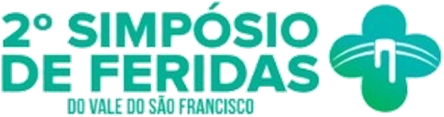
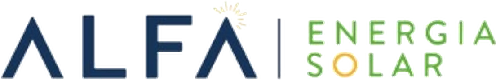
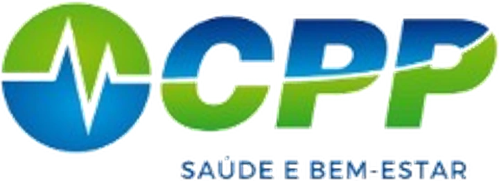
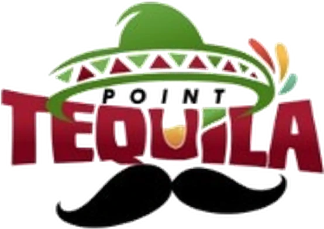
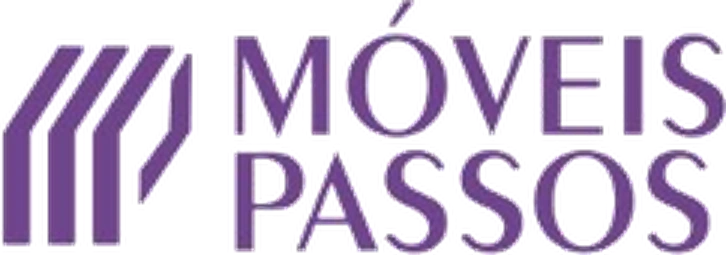
Entraram no meu site e estão me pedindo o portfólio. O site já está dando certo. É para uma empresa gigante internacional 😮
Ter um marketing por trás é a coisa mais incrível que uma empresa pode fazer de investimento! Está perfeito! Vocês deram brilho ao vídeo!
Esse evento foi um divisor de águas. Executamos exatamente como vocês pediram e foi sucesso. E os convites começaram a chegar.
Só posso falar neste primeiro mês que foi o melhor investimento que eu poderia fazer.
Projetos no ar, campanhas acompanhadas de perto e conhecimento compartilhado: é assim que a Status transforma presença em valor.
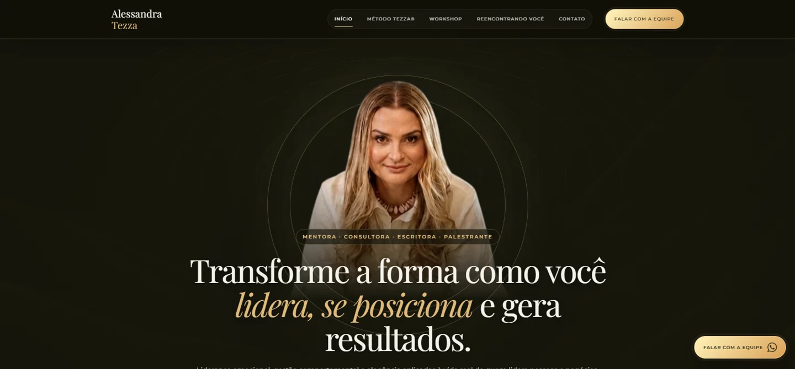
CaseAlessandra TezzaSite institucional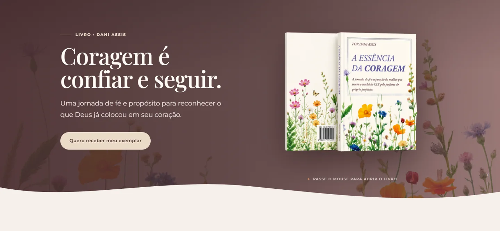
CaseDani AssisLanding page de vendas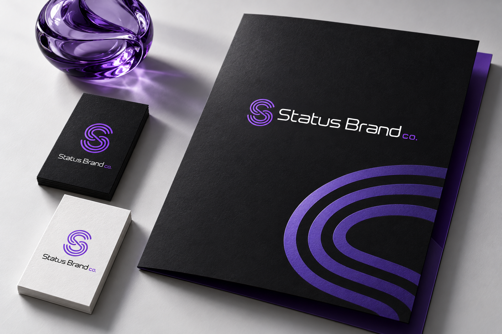
IdentidadeStatus BrandSistema visual e papelaria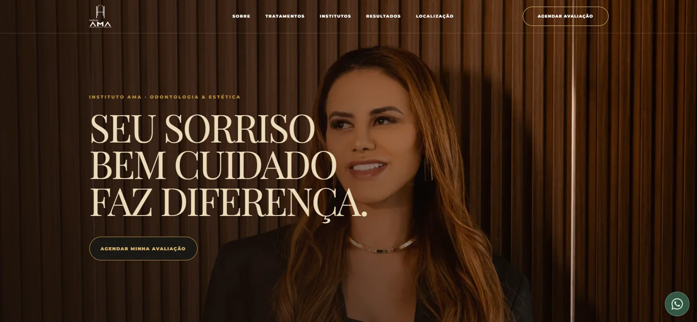
CaseInstituto AMAPetrolina e Juazeiro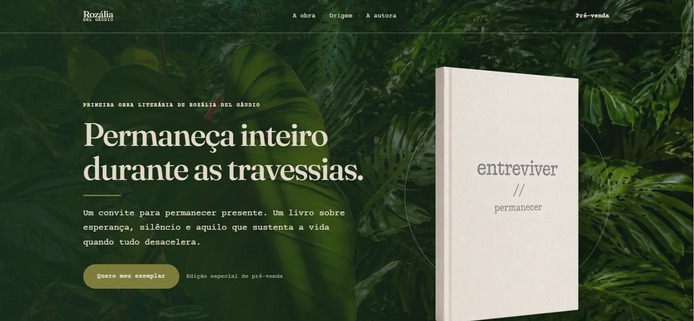
CaseRozália Del GáudioLanding page de lançamento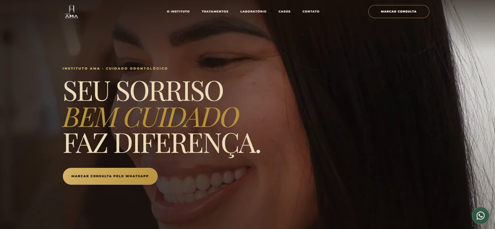
CaseInstituto AMASento SéDefinimos o lugar da sua marca no mercado e conectamos conteúdo, performance, experiência e tecnologia para que cada ponto de contato trabalhe na mesma direção.
O que sua marca representa e por que ela merece ser escolhida.
Comunicação consistente e reconhecível em cada canal.
Campanhas com objetivo, indicadores e ajustes constantes.
Identidade e digital deixando cada contato mais claro.
Sites, automações e IA para aproximar o cliente.
Posicionamento, identidade, conteúdo e tráfego pago para marcas que querem ocupar seu espaço.
Sua operação de social media em uma única plataforma: planejamento, aprovação do cliente, CRM e financeiro num só lugar.
Conhecimento, comunidade e desenvolvimento para transformar ideias em prática.
Marca, tecnologia e educação nascem da mesma vontade: fazer o seu negócio crescer com estratégia, do primeiro contato à fidelização.
Conhecer a Status MediaSites e landing pages pensados a partir do objetivo de cada cliente. Passe o mouse ou toque para conhecer cada projeto.
Cada solução nasce de uma pergunta: o que vai fazer diferença para o seu negócio agora?
Uma identidade que traduz sua essência e uma direção clara para se diferenciar.
Uma presença consistente, com mensagens que conectam e campanhas com objetivo.
Da primeira visita ao atendimento: experiências digitais que aproximam e simplificam.
“Uma boa parceria começa com escuta e cresce com confiança.”
Este espaço receberá as experiências compartilhadas por nossos clientes.
Escuta, visão de negócio e colaboração. A proximidade faz parte do nosso processo, desde a primeira conversa.
Tráfego pago e automações com IA
Uma construção próxima, que reúne estratégia, criação e tecnologia em torno dos objetivos da sua marca.
Uma boa conversa pode mudar o próximo capítulo.